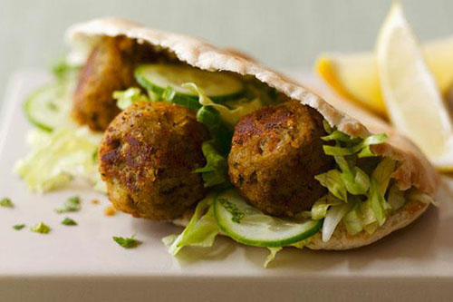

Go Speed Racer. Go Speed Racer. Go Speed Racer go! Doin' it our way. Nothin's gonna turn us back now. Straight ahead and on the track now. We're gonna make our dreams come true. So get a witch's shawl on a broomstick you can crawl on. Were gonna pay a call on the Addams Family.